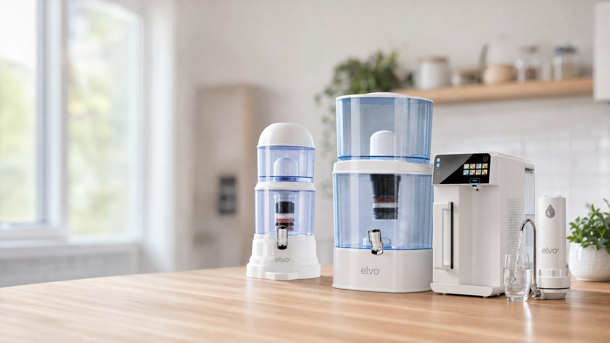
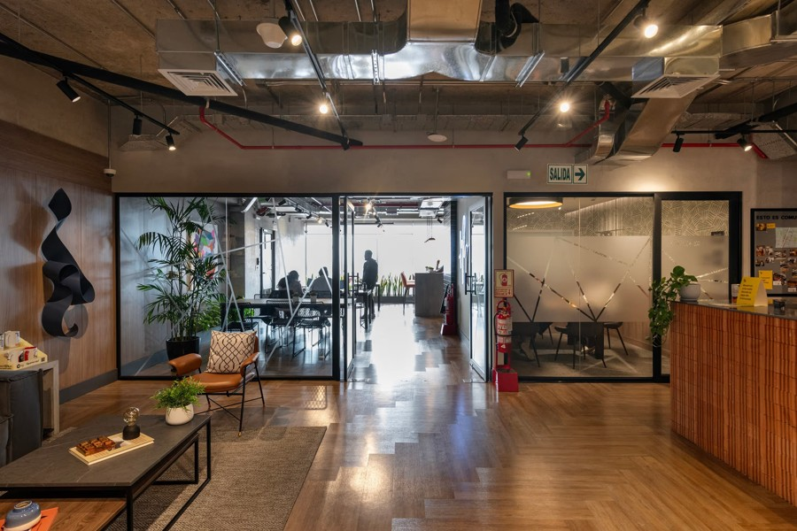
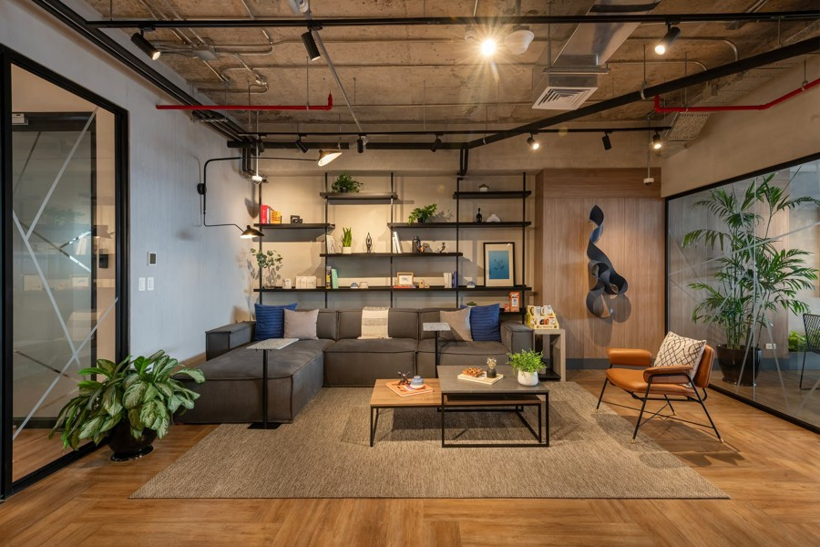
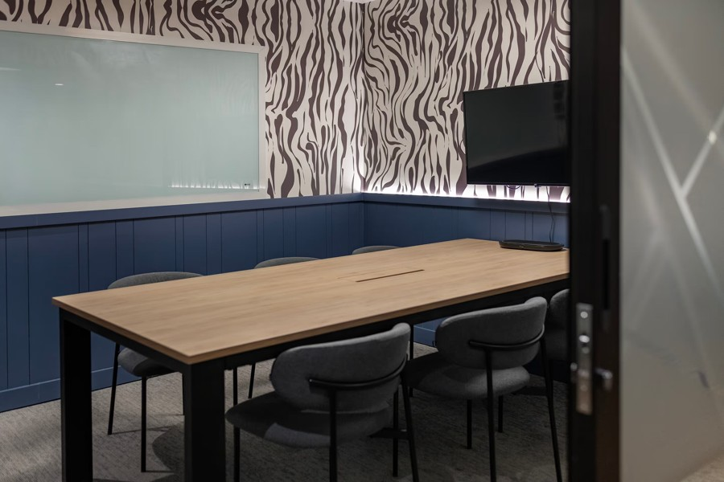

El agua es el primer ingrediente. Buscamos a alguien que sepa escuchar a las familias, acompañarlas por teléfono y ayudarlas a elegir.
Referencial: con 20 ventas de Nativo en el mes, el ingreso total es de aproximadamente S/1,820 (fijo, movilidad y comisiones). Depende de las ventas entregadas y cobradas.
elvo· es de Inversiones Gad S.A.C., una empresa con más de 20 años en el mercado. Nuestras clientas y clientes son familias que quieren dejar de cargar bidones y de hervir agua. El equipo se instala en cinco minutos y nosotros nos encargamos del resto.
Nuestro sistema atiende el WhatsApp y preselecciona a quienes ya quieren comprar. No es venta en frío.
También acompañas a quienes preguntaron y no compraron, y avisas a quienes les toca cambiar el repuesto.
Cada llamada y cada venta vive en el sistema. Ritmo esperado: 60 a 80 llamadas efectivas al día.
El Polo 695, Santiago de Surco, junto al C.C. El Polo, Monterrico. Comedor equipado, agua, café y té ilimitados, cabinas para llamadas, aire acondicionado e internet de alta velocidad. Transporte público a pocos minutos.



| Turno A | 9 a. m. – 6 p. m. |
| Turno B | 11 a. m. – 8 p. m. |
| Sábados | 9 a. m. – 6 p. m. |
| Domingos | libres |
Lunes a viernes, con 1 hora de refrigerio. El turno se define en la entrevista.
Te llamamos y hacemos un pequeño reto de venta por teléfono, dentro de 48 horas.
Entrevista con Angel, el fundador, en Comunal El Polo.
Carta de oferta con tu turno y fecha de inicio.
Primera semana de capacitación en producto, sistema y guion.
Postula por WhatsApp o con el formulario del anuncio.
Escríbenos por WhatsApp · 929 190 100